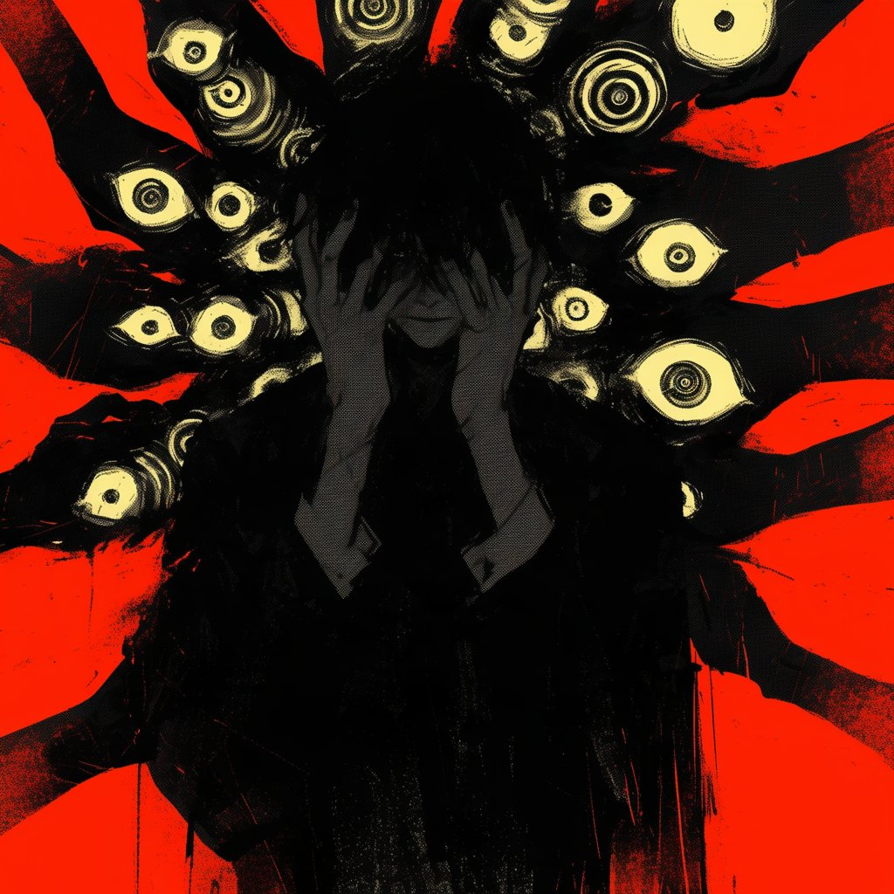

В понедельник Поликарпыч вынес на лестницу ведро, поставил его под объявлением о недопустимости складирования личного имущества и сел на него.
Объявление было новое, в прозрачном кармашке. Внизу оставили место для подписи ответственного, но ответственный пока не нашёлся. От этого запрет казался особенно основательным: его как будто установил сам дом.
Михаил спускался пешком. Лифт работал, но в зеркале кабины нужно было стоять напротив собственного лица, а на лестнице достаточно было переставлять ноги.
- Ты куда? - спросил Поликарпыч.
- На работу.
- А я жду.
- Кого?
- Пока вымоют.
На ступенях между девятым и десятым этажами лежала вода. Пахло мокрым цементом и дешёвым лимоном. Уборщица стояла ниже, опершись на швабру, и смотрела на старика с профессиональным недоверием.
- Я ему говорю: проходите. Он сел.
- Вы же моете, - объяснил Поликарпыч.
- И что?
- Сейчас пройду, наследю. Вы опять будете мыть.
- Все ходят.
- Ну, я посижу.
Михаилу стало неловко за него. Не за ведро и не за растянутую рубаху. За то, что очевидную вещь приходилось объяснять взрослому человеку: если тебе сказали проходить, нужно проходить. Нельзя учреждать на лестнице отдельную жизнь.
Поликарпыч подвинул ведро, освобождая дорогу.
- Ты иди. Тебе на работу.
В голосе не было ни насмешки, ни приглашения остаться. И Михаил вдруг рассердился. Старик мог позволить себе сидеть. У него не было Ирины Петровны, квартального отчёта, этих двадцати двух минут до метро. Он уже отжил всё, ради чего нужно вставать и куда-то идти, и теперь мог смотреть на остальных с ведра.
Михаил шагнул через мокрую ступень.
- Порфирий Иваныч.
- Чего?
- Вы в субботу стучали?
- Стучал. Ты не открыл.
- Я слышал.
- Значит, хорошо стучал.
Уборщица фыркнула и потянула швабру к себе. Поликарпыч поднял обе ноги, пропуская мокрую тряпку под ведром. Сидя так, с коленями у подбородка, он был похож на высохшую речную птицу.
Михаил отвернулся.
На работе в тот день переставляли шкафы. Освобождали место для нового сотрудника, которого ещё не взяли, но стол для него уже заказали. Алексей стоял возле пустого шкафа и держал в руках папку без надписи.
- Это твоё?
Михаил посмотрел. В папке лежали старые распечатки, два чистых файла и инструкция от чайника, сломавшегося ещё летом.
- Не моё.
- Тогда чьё?
Они спросили у Ирины Петровны. Та велела пока никуда не убирать: может понадобиться. Папку положили на шкаф, шкаф передвинули, и к вечеру она снова принадлежала тому месту, на котором лежала.
Михаил вспоминал ведро. Как старик поднял ноги. Как уборщица, не прекращая разговора, вымыла под ним. Нелепая картинка почему-то возвращалась с подробностями: серый носок, розоватая пятка, коленка, выпершая через ткань. В этой картинке никому не удалось настоять на своём, и всё-таки лестница стала чистой.
Он попробовал представить на ведре себя. Сразу возникло множество затруднений. Куда деть сумку. Как объяснить, почему сидишь. Что сказать соседу, если тот спросит, не плохо ли тебе. Самого сидения представить не удалось.
Вечером, уже дома, Михаил подогрел вчерашний рис. Поставил тарелку перед собой и вдруг вспомнил субботний стук. Поликарпыч был там, за дверью, пока он сидел в темноте. Старик не мог знать про лес. Должно быть, пришёл за какой-нибудь мелочью. За солью. За отвёрткой. Постучал, послушал и ушёл на свой этаж.
Михаил доел рис. Потом вымыл тарелку, хотя обычно оставлял её до утра. Ещё постоял возле стола, на котором лежала накрытая птица. Взял ключи.
В подъезде он успел придумать, что скажет: извините, наушники были, не слышал. Пока поднимался на один этаж, выдумка обросла подробностями. Даже музыку подобрал. У двери Поликарпыча остановился и убрал ключи в карман.
По имени
Вечером ведра уже не было. Объявление осталось. Михаил постоял перед ним, потом поднялся на десятый этаж и позвонил.
За дверью стукнуло железо.
- Кто?
- Я.
- Это хорошо. А кто?
Дверь открылась раньше, чем Михаил успел ответить. Поликарпыч держал разводной ключ. На правой щеке белела полоска муки.
- Кран? - спросил Михаил.
- Тесто.
- Ключом?
- Кран тоже.
В кухне одновременно происходило несколько дел, которым в Михаиловой квартире понадобились бы разные вечера. В тазу поднималось тесто. Из разобранного смесителя торчал рыжий винт. На батарее сушились носки. Возле телефона лежал раскрытый паспорт, прижатый половиной луковицы.
- Вам помочь?
- Руки вымой. Лук режь.
Михаил вымыл руки и взял нож. Поликарпыч вернулся под раковину. Оттуда доносились скрип, дыхание и отдельные слова, не предназначенные ни для крана, ни для собеседника.
- А почему вы Поликарпыч? - спросил Михаил.
- Потому что Порфирий.
- Не понял.
- В цехе был ещё Порфирий. Пил. Нас путали. Решили, что один будет Поликарпыч.
- И вы согласились?
- А чего? Хорошее имя.
- Но ведь не ваше.
Из-под раковины появилась рука.
- Ключ дай. Не этот. У которого губа разболталась.
Михаил подал.
- Сорок лет зовут, - сказал Поликарпыч. - Когда своё-то будет?
Лук резал глаза. Михаил хотел спросить, что старик ответил бы, если бы его назвали как-нибудь обидно, но тот вылез, открыл воду и прислушался. Несколько секунд они оба смотрели на кран.
Кран молчал.
- Вот, - сказал Поликарпыч. - А ты боялся.
Михаил не боялся крана. Но объяснять это почему-то не захотелось.
Пока пироги пеклись, Поликарпыч заставил его держать дверцу духовки.
- Она сама не держится?
- Держится. Только закрывается.
Старик выдвинул противень, заглянул снизу. Михаил стоял, наклонившись, и чувствовал, как нагревается лицо. Пахло луком, горячим железом и чем-то сладким, хотя сахара в начинке не было.
- А вы всегда так делаете? - спросил он.
- Как?
- Сами. Краны, пироги.
- Пироги кто ж мне испечёт?
- Купить можно.
- Можно. Подержи ровно.
Михаил подержал. На столе лежали ещё четыре сырых пирога, неровных, с толстыми швами. Один Поликарпыч пометил коротким надрезом.
- Этот с чем?
- С капустой. Лук кончился.
- Вы же мне целую миску дали.
- Ну, значит, капуста кончилась. Не помню. Поедим - узнаем.
Он говорил без той бодрости, которой обычно прикрывают хозяйственную неудачу. Михаилу нравилось смотреть, как он перемещается по кухне: берёт тряпку, пробует ложкой начинку, прислушивается к воде в трубе. В каждом деле старик успевал оказаться целиком, а потом оставлял его и поворачивался к следующему. Михаил поймал себя на том, что подражает его движениям. Поставил чашку погромче. Раздвинул локти. Стало неудобно.
- Руку отодвинь, - сказал Поликарпыч. - Обожжёшь.
Михаил отодвинул.
Когда они наконец сели, стемнело. На подоконнике отражались два маленьких огня от конфорок. Поликарпыч снял паспорт с луковицы, вытер обложку ладонью и сунул в ящик.
- Завтра за пенсией? - спросил Михаил.
- Симку менять. В салоне сказали: тот человек, на которого оформлено, должен лично явиться.
- Так вы и явитесь.
- Я уже являлся. Им Порфирий нужен. А я пришёл и говорю: Поликарпыч. Они меня назад отправили за собой.
Михаил засмеялся. Старик посмотрел на него с удовольствием и разломил первый пирог. Изнутри пошёл пар.
На ночь
О птице он рассказал за пирогами.
Сначала о мастер-классе. Потом о байдарке. Когда дошёл до леса, Поликарпыч выключил радио. Михаил заметил это, и рассказывать стало труднее: теперь нельзя было надеяться, что главное потеряется между прогнозом погоды и рекламой окон.
Он рассказал про глаз. Про то, как опустился на колени. Про пятно под перьями.
Поликарпыч долго жевал.
- Жалко, - сказал он.
Михаил ждал.
- Маленькая была?
- Не очень. Вот такая.
Он развёл ладони, оставив между ними место. В этом месте уже несколько дней ничего не помещалось.
- Зимой много гибнет, - сказал Поликарпыч.
- Дело не в зиме.
- А в чём?
Михаил попробовал объяснить. Пришлось вернуться к объявлению, к глазу на бумаге, к тому, что птица была его. Не принадлежала ему, а была его. Поликарпыч слушал, счищая ногтем тесто с большого пальца.
- Ты её забрал?
- Нет.
- Ну и правильно. Мёртвое домой таскать незачем.
Михаил почувствовал, как рассказ стягивается у него во рту, делается маленьким и глупым. Сейчас старик скажет: ещё нарисуешь. Или: жизнь длинная. Или предложит сходить на рыбалку, где вода ничего не говорит, но всё объясняет.
- Вы не понимаете.
- Не понимаю, - согласился Поликарпыч.
И налил ему чаю.
Михаил уставился на чашку. До сих пор, когда люди не понимали его, они торопились это скрыть. Поликарпыч поставил непонимание между ними, рядом с сахарницей, и продолжал сидеть.
- Мне домой надо, - сказал Михаил.
- Иди.
У двери старик сунул ему свёрток с пирогами.
- Это на ночь.
- Я ночью не ем.
- Сегодня поешь.
Дома Михаил развернул бумагу, съел один пирог, потом второй. Лук был крупно нарезан. Он сам его так нарезал.
На следующий вечер он снова поднялся наверх, но не позвонил. За дверью работал телевизор. Говорили громко, перебивая друг друга; Поликарпыч иногда отвечал им, и Михаил не мог разобрать, сердится он или смеётся.
Он спустился домой. Поставил чайник. Достал рисунок и долго рассматривал крыло, стараясь увидеть в нём только нанесённые на бумагу линии. Получалось ненадолго. Между штрихами снова возникала поляна, и рука сама тянулась накрыть лист.
Михаил накрыл.
Затем позвонила мать. Рассказала, что у тёти Зои лопнула труба и теперь все ищут, у кого осталась плитка такого же цвета. Михаил слушал внимательно. Спросил, затопило ли соседей. Оказалось, нет: тётя Зоя услышала ночью шипение, решила, что это телевизор, выключила его, шипение осталось. Утром нашла воду под ванной.
- Хорошо, что не уехала, - сказала мать. - Собиралась ведь ко мне.
Михаил посмотрел на накрытый лист.
- А ты что делаешь?
- Сижу.
- Ужинал?
- Да.
Он хотел рассказать про Поликарпыча, про пироги, про то, как старик назвал себя в салоне связи. Уже открыл рот, но мать заговорила о морозах, и он дал ей договорить. Потом всё-таки рассказал. Она засмеялась, попросила повторить.
Когда разговор закончился, в комнате было тихо, но уже не так, как до звонка. Михаил убрал чашку. Внизу кто-то заводил машину, долго, с перерывами. Мотор схватил, заглох. Михаил невольно ждал следующей попытки.

Правильный старик
Через неделю Михаил обнаружил, что ждёт Поликарпыча у лифта.
Он выходил на две минуты раньше. Задерживался с ключами. Прислушивался, не хлопнет ли дверь наверху. Если старик не появлялся, Михаил сердился на себя и ехал один.
Поликарпыч тем временем делал вещи, которым Михаил не находил общего названия. Возвращал в магазине кислое молоко, не начиная с извинений. Отказывался обсуждать с соседкой, прилично ли мужчине его возраста покупать жёлтый шарф. Покупал шарф, потом отдавал его внуку, потому что шея чесалась. Мог посреди разговора сказать «я устал» и закрыть дверь. На следующий день открывал её как ни в чём не бывало.
Михаил пытался понять, как это устроено. Будто в старике не было комнаты, где заранее собирались все знакомые и решали, можно ли ему сейчас сделать то, что он собирается.
Однажды в обед Михаил остался за столом, когда Алексей ушёл в столовую. На экране ещё была открыта таблица. Он свернул её, достал лист и положил перед собой. До вечера было четыре часа; сейчас можно было хотя бы начать.
Минут десять он рисовал край крыла. Потом захотелось есть. Линия уже шла, и прерывать её казалось глупым, но он всё чаще смотрел на часы. Наконец отложил ручку. В столовой оставались только холодные макароны и котлета, прилипшая к тарелке с одного боку.
Михаил ел и злился. Он ведь сам остался. Никто не просил его рисовать в обед. Откуда же взялось ощущение, будто он опять потратил время на что-то обязательное? Утром ему хотелось дойти до листа. Дошёл - и принялся терпеть, как терпят на совещании до перерыва.
Вернувшись, он посмотрел на крыло. Ряд одинаковых перьев, старательно доведённых до конца. Рука продолжала форму даже там, где уже ничего не видела. Михаил убрал лист в ящик, но не порвал.
Вечером Поликарпыч возился возле своих почтовых ящиков. Михаил помог ему вытащить застрявшую рекламную газету. Поговорили о почтальоне, который всё время путает этажи. О листе в ящике стола Михаил не сказал. Он ещё сам не знал, что с ним произошло.
Дома захотелось снова достать бумагу. Он прошёл мимо стола на кухню и остановился у окна. Внизу разгружали машину: человек в синей куртке выдвигал коробки к краю, второй принимал, прижимая к груди. Михаил долго смотрел на руки второго. Они всякий раз находили новое место на картоне. Одну коробку он обнял снизу, другую перевернул, прежде чем поднять. В какой-то момент первый не подал следующую, и второй остался стоять с протянутыми ладонями.
Михаил вернулся к столу. На этот раз нарисовал две руки. Ничего особенного: четыре пальца слиплись, большой вышел слишком далеко. Он попробовал ещё. Не заметил, как остыл чай.
Потом вспомнил крыло и сравнил оба листа. Руки были нарисованы хуже. На них, однако, хотелось смотреть. Он оставил их рядом с лампой, а крыло убрал.
К утру разница перестала казаться такой ясной. На работе руки выглядели обычным наброском, к тому же неудачным. Михаил не мог вернуть вчерашнее внимание одним воспоминанием о том, что оно было. Только заметил, как снова торопится назвать рисунок плохим, чтобы дальше с ним уже ничего не делать.
В субботу они пошли за прокладкой для крана.
Поликарпыч сказал, что знает место. Место оказалось на другом конце района, в подвале под аптекой, и было закрыто. На двери висело объявление: «Перерыв 15 минут». Бумага пожелтела по краям.
- Давно тут перерыв? - спросил Михаил.
- В прошлый раз тоже был.
- И вы меня сюда привели?
- В прошлый раз открыл.
Они подождали. Мимо шли люди с пакетами из аптеки. Женщина с ребёнком остановилась поправить варежку, ребёнок упёрся ногой в нижнюю ступень и рассматривал Поликарпыча. Старик показал ему зажатую в пальцах старую прокладку.
- Колесо, - сказал ребёнок.
- Оно.
- От чего?
- От крана.
Мать потянула ребёнка за руку, но тот ещё оглядывался.
Через десять минут Михаил достал телефон и нашёл магазин в двух кварталах. Там было открыто до девяти, в отзывах хвалили ассортимент. Поликарпыч посмотрел на экран.
- Пошли, - сказал он.
Михаил почему-то ожидал спора. Пока шли, несколько раз начинал объяснять, что в интернете удобно заранее проверять часы работы, но каждый раз слова оказывались лишними: старик уже шёл рядом.
В магазине прокладки продавали комплектом. Михаил взял комплект, Поликарпыч велел вернуть.
- Там восемь штук. Тебе одна нужна.
- Вдруг ещё понадобится.
- Когда понадобится, возьмём.
Продавец вмешался: по одной не продаём. Поликарпыч посмотрел на него, потом на комплект и заплатил.
На улице достал из упаковки нужную, остальные убрал в карман. Михаил ждал продолжения. Хотелось понять, кто здесь уступил и почему всё обошлось без унижения.
- А остальные?
- Пусть лежат.
- Вы же сказали, не нужны.
- Теперь есть.
У дома Поликарпыч задержался возле качелей. Цепь перекрутилась, сиденье стояло ребром. Он продел его между подвесами, распутал, толкнул ладонью. Сиденье ушло вперёд и вернулось с коротким скрипом.
Михаил держал пакет и смотрел. Старик ещё раз толкнул качели, уже слабее.
- Внук приезжает? - спросил Михаил.
- Нет.
- А зачем тогда?
Поликарпыч придержал сиденье, чтобы оно не ударило по ногам.
- Перекручено было.
Михаилу захотелось, чтобы этот ответ что-нибудь объяснил и в его собственной жизни. Но качели просто висели ровно. Они ещё немного качались, когда оба вошли в подъезд.
Часть вторая. То, что выходит вместо птицы
Звук
Поликарпыч нашёл его в подвале.
Михаил спустился туда за старым стулом: управляющая компания разрешила жильцам забрать вещи до вывоза, и он вспомнил, что когда-то отнёс туда свой. На стуле было удобнее рисовать, чем на кухонном табурете. Удобство показалось достаточной причиной спуститься.
Стул стоял за трубой. Чтобы достать его, нужно было встать на колени и просунуть руку между ржавым вентилем и стеной. Михаил попробовал, зацепился рукавом, выругался. Попробовал снова. В груди поднялось короткое, глухое рычание. Он сам испугался звука и оглянулся.
В дверях стоял Поликарпыч с фонариком.
- Кто там рычит?
- Никто.
- Слышу, что не кот.
Михаил высвободил рукав.
- Застряло.
- Вижу.
Старик поставил фонарик на трубу и присел рядом. Не полез помогать, только придержал свет. Михаил переставил ладонь, упёрся коленом в бетон. Рычание снова поднялось, теперь длиннее. Он не стал его давить. Потянул стул на себя и сразу отпустил: ножка была заведена за трубу. Нужно было не сильнее тянуть, а повернуть.
Стул вышел легко.
Некоторое время Михаил оставался на коленях. Через ткань брюк холодил бетон, в ладони лежала деревянная перекладина. Дыхание стало шумным, непривычно низким. Ему хотелось разогнуть спину и одновременно остаться так ещё немного.
- У тебя рукав порван, - сказал Поликарпыч.
- Знаю.
- Зашить могу.
- Не надо пока.
Старик взял фонарик. Михаил поднялся, подхватил стул. На лестнице встретилась соседка с пятого. Увидела их, посмотрела на грязные колени Михаила, открыла рот.
- Стул, - сказал Поликарпыч.
Она закрыла рот и прошла.
Стул оказался ниже, чем он помнил.
Михаил поставил его у стола, сел, положил руки перед собой. Локти задрались. На табурете было удобнее. Он попробовал подложить свёрнутый плед, потом снял: плед съезжал, приходилось удерживать его бёдрами.
Стул стоял в комнате три дня. На нём лежала одежда, потом папка, потом снова одежда. Михаил злился всякий раз, когда проходил мимо: ради него порвал куртку, испачкал брюки, а теперь даже сесть нельзя. В среду вечером перенёс его к окну. Там сиденье пришлось как раз под батарею, и можно было греть спину.
Он сел боком, положив на колени блокнот. За стеклом шёл снег, мелкий, редкий. В окнах напротив люди передвигались из комнаты в комнату, и Михаил заметил, что давно уже не думает о них как о людях. Светлые прямоугольники были частью пейзажа. В одном появился мужчина, поднял обе руки и задёрнул шторы. От этого простого движения Михаилу стало неуютно, будто он подглядывал, хотя до этого он ни на кого не смотрел.
На листе вытянулась спина, над ней маленькая голова с опущенным клювом. Михаил хотел довести линию до хвоста, но остановился: крылу не хватало места. Он начал теснить перья одно к другому, и птица всё сильнее втягивала голову в плечи.
Михаил перевернул страницу. Начал заново. Снова спина, только теперь выше, тяжелее. Он надавил карандашом, сломал кончик. Осколок упал на брюки.
Пришлось встать за точилкой. В ящике её не было. Он перерыл второй, потом третий и нашёл в кухне, рядом с батарейками. Всё это время внутри продолжалось движение: вытянуть шею, оглядеться, проверить, не смотрят ли. Михаил остановился посреди кухни.
Никто не смотрел.
Он стоял так, с точилкой в руке, пока не услышал собственный выдох. Плечи опустились. Не сразу, сначала одно, потом другое. Он не знал, какому зверю принадлежали эти плечи, и в тот вечер уже не пытался решить.
Четверг
Рисовать всё равно не получалось.
Птицы выходили тяжёлыми, с короткими шеями и слишком плотно сложенными крыльями. Михаил стирал их, пока бумага не начинала махриться. Пробовал начинать с крыла, но штрихи слипались в одну тёмную плоскость. Пробовал с глаза - получалось отверстие, за которым кто-то прятался.
По вечерам он садился на ковёр возле стола. Не для упражнения: там не нужно было выбирать, как сидят люди, умеющие рисовать. Иногда подолгу стоял, опираясь на ладони. Спина переставала удерживать лицо, которое за день успевало устать больше остальных частей тела.
Внутри кто-то прислушивался. Михаил не видел зверя целиком. Было желание прижать живот к земле и переждать шаги. Было другое - коротко броситься вперёд, пока не успели окликнуть. Он сначала пугался, потом пытался придумать им названия, потом оставлял без названий. Они не исчезали. Особенно тот, который хотел переждать.
В четверг Ирина Петровна попросила его задержаться. Нужно было свести две версии отчёта: в одной стояли новые суммы, в другой - старые номера поставок. Михаил остался. До этого он почти весь день хотел домой и теперь ждал знакомой тяжести, которая начнёт давить от горла к груди.
Но первые полчаса прошли незаметно. В одном письме оказалась пропущена строка. Нашлась накладная, которую считали потерянной. Он позвонил в логистику, поговорил с женщиной, имени которой не знал, и вместе они восстановили, откуда взялось расхождение. Когда положил трубку, Ирина Петровна спросила:
- Разобрались?
- Здесь да. Дальше ещё посмотрю.
Она ушла в соседний кабинет. Михаил продолжил. Он уже не думал о том, что задержался, пока не дошёл до пустой графы: туда следовало перенести данные из ещё не пришедшего письма. Тогда стало слышно, как гудит лампа и как уборщица за перегородкой передвигает стул.
Дома он открыл блокнот. Хотелось удержать это различие: в офисе делал то, чего утром не хотел делать, и вдруг оказался внутри дела. Здесь, перед собственной бумагой, снова мог просидеть час, ожидая, когда разрешится первый штрих.
Он написал на обороте листа: «Почему птица?»
Посмотрел и зачеркнул. Вопрос получился как тема сочинения.
Попробовал вспомнить, чего хотел тогда, до байдарок. Нарисовать глаз. Увидеть птицу целиком. Пойти в мастерскую, где другие люди сядут перед такой же бумагой и никто не спросит, зачем ему это понадобилось. Но дальше воспоминание делалось слишком гладким: всё в нём объясняло то, что случилось потом. Даже дверь мастерской уже стояла как место, от которого он отвернулся. Тогда же он просто положил ладонь на дерево. Не знал ни поляны, ни будущего разговора с Поликарпычем.
Михаил перевернул лист. Попробовал провести линию, ничего ею не обещая. Линия загнулась, остановилась возле края. Он хотел продолжить её вниз, но вдруг вспомнил чёрный стержень пера на мокрых листьях. Рука замерла.
Так он и просидел. Не выбирал между работой и рисунком, не собирался ни перед кем оправдываться. Ему нужно было понять, почему рука тянется к бумаге и почему, дойдя до неё, так часто останавливается.
Наутро в отчёте нашлась ещё одна ошибка. Михаил и Ирина Петровна разбирались по строкам до половины двенадцатого. Вчерашняя увлечённость не помогала: сейчас он хотел, чтобы его оставили в покое. В одном месте ошибся он, в другом снова изменились исходные данные. Пришлось звонить той же женщине из логистики. На этот раз спросил, как её зовут.
В пятницу Алексей позвал его в столовую.
Пока шли, Михаил вспоминал руки грузчика на картонной коробке. Вчерашняя линия, проведённая дома, была такой же незаконченной, как жест человека, которому ещё не подали следующую вещь. Он пытался вспомнить, где именно остановил перо, но Алексей уже о чём-то спрашивал.
Алексей говорил о зимней резине.
- На всех четырёх менять надо, - объяснял он. - А я думаю: задние ещё хорошие. Зачем хорошие выбрасывать?
- Так ты менял?
- Все. Мне там сказали: либо все, либо мы не берёмся. Я говорю: а в другом месте? Они говорят: езжайте в другое. Культурно так.
В столовой они сели у окна. На улице грузчики вытаскивали из машины большой холодильник. Один всё время шёл спиной, другой командовал: ещё, ещё, стоп. Михаил следил за ними, пока Алексей выбирал из супа лавровый лист.
- Вы вчера допоздна? - спросил Михаил.
- До восьми. Кравцов накладные привёз.
- Я не заметил, когда ушёл.
- Нас в логистику забрали.
Михаил посмотрел на него.
- Там что-то не сходилось?
- Да всё сошлось. Он раньше не успел.
Алексей положил лавровый лист на край тарелки и продолжил про шины. Он зевнул, прикрыв рот ладонью. Михаил заметил, что смотрит на изгиб его пальцев. Потом поднял глаза: Алексей ждал ответа на вопрос про шины, который он опять пропустил.
Они доели. Уже у выхода Михаил сказал:
- Слушай, покажи мне потом, что вы с ними делаете. Я всё время суммы беру, а остальное пропускаю.
- С чем?
- С накладными.
Алексей подумал.
- Там надо знать, что куда. Я покажу.
Обратно шли той же дорогой. Михаил попробовал рассказать про грузчиков, которых видел из окна, но Алексей уже говорил о принтере: там зажевало лист, и нужно было вернуться, пока никто не потянул его силой. У входа он придержал дверь, Михаил стряхнул снег с ботинок. О рисунке так и не заговорили.
Чужая рука
- Дайте посмотрю, - сказал Поликарпыч.
Михаил принёс ему папку. Не сразу всю, сначала несколько листов, потом вернулся за остальными. Старик разложил рисунки возле хлебницы.
- Это кто?
- Птица должна быть.
- А это?
- Тоже.
Поликарпыч повернул лист.
- Крыло у неё тяжёлое.
- Я знаю.
- А чего спрашиваешь?
- Я не спрашиваю.
- Тогда чего принёс?
Михаил сел. Вопрос оказался неприятно точным, но не по той причине, по которой хотелось бы. Он принёс рисунки, чтобы старик увидел в них то, чего он сам не видел. Сказал: вот она. Положил сухой палец в нужное место. После этого можно было бы вернуться домой и продолжить.
- Вы всё время знаете, чего хотите, - сказал Михаил.
Поликарпыч сдвинул лист от мокрого круга на столе.
- Не всё время.
- Ну почти.
- Сегодня суп хотел. Соль два раза положил. Теперь не хочу.
- Я не про суп.
- А я про суп. Целая кастрюля. Выливать жалко.
Они поели пересоленного супа. Поликарпыч добавил в свою тарелку кипятку. Михаил не стал, хотя хотел. Потом всё-таки добавил.
Старик смотрел рисунки ещё раз, уже после еды. На листе с тяжёлой шеей остановился.
- Этот злой.
- Он не злой.
- Ну, мне так видится.
Михаил взял лист. Раздражение шло от горла к щекам, но за ним было что-то ещё. На рисунке шея закрывала голову, почти всю. Он рисовал силу, а старик увидел злость. Это было обидно. И всё же теперь Михаил видел, как именно положил штрих: густо, поверх предыдущего, чтобы не оставалось просвета.
Он убрал лист в папку, не зачёркивая.
В воскресенье Михаил зашёл в магазин художественных принадлежностей.
Девушка за кассой спросила, что он ищет. Он сказал: бумагу. Она спросила: для чего. Он ответил: тушь, перо. Тогда она вытащила две пачки и стала объяснять разницу. Одну можно было трогать, другую не стоило раскрывать. Михаил провёл пальцами по открытому листу.
- Эта впитывает, - сказала девушка. - Линия будет расползаться. Вам такой эффект нужен?
Михаил не знал. Он смотрел на белые прямоугольники в её руках и понимал, что ждёт от них слишком многого.
- А чтобы не расползалась?
Она показала вторую пачку. Дороже почти вдвое. Он купил её.
Дома новая бумага долго не позволяла начать. На старой уже лежали неудачные рисунки, и следующий ничем особенным не рисковал. Эта была хорошая, дорогая, у неё ещё не было ни одного испорченного угла. Михаил взял лист из прежней пачки.
Птица снова сжалась на ветке. Он старался вытянуть шею, обозначить плечо, но каждый новый штрих делал её теснее. Перья лежали густо, голова почти утонула в них. Михаил положил лист лицом вниз.
Поликарпыч позвонил в дверь около семи. Принёс починенную куртку: Михаил всё-таки отдал её утром. На рукаве шёл крупный серый шов.
- Чёрных ниток не нашлось, - сказал старик.
Михаил примерил. Рукав слегка тянул, когда он сгибал локоть. Старик велел снять, распорол два стежка и зашил свободнее, прямо на кухне.
- Теперь?
- Теперь хорошо.
Поликарпыч убрал иголку в воротник собственной рубахи. Увидел перевёрнутый лист, но не потянулся за ним.
Михаил перевернул сам.
- Вот.
Старик придвинул лист поближе.
- Мёрзнет, - сказал он.
- Почему?
- Нахохлилась вся. У нас на реке так сидят.
Михаил посмотрел. Он видел неудавшуюся шею, слишком густую штриховку. Старик увидел птицу, которая прятала голову от холода. Михаил придвинул лист: маленький клюв действительно едва выступал из перьев.
Поликарпыч ушёл. Михаил вынул новую бумагу из пакета, подержал и убрал обратно. Рисунок оставил на столе. Ночью, проходя за водой, остановился возле него, но лампу не включил.
Часть третья. Птица, которую не заказывали
На трубе
В декабре снег стаял до земли. Возле офиса снова выступили окурки, и Степан ходил собирать их в банку, время от времени останавливаясь у двери, чтобы впустить человека с пропуском.
Птица сидела на отводе водосточной трубы.
Михаил увидел её снизу: сначала когти на облупившемся железе, потом узкую грудь, сложенные крылья, чёрный глаз. Под горлом светлело неровное пятно. Порыв ветра приподнял перья на боку, и птица переступила, не разжимая одного когтя.
Он остановился.
Она повернула голову.
Та.
Слово пришло целиком, прежде, чем Михаил успел его подумать. В груди стало тесно от узнавания, такого быстрого, что он даже сделал шаг вперёд.
Потом вспомнил листья. Ель. Сжатые когти. Холод, который шёл изнутри.
Нет. Похожая.
Птица наклонилась, осмотрела край трубы. Из-под перьев высунулась тонкая нога, вполне деловая, с розоватой чешуёй. Михаил почему-то рассердился на эту ногу. Она не имела отношения к тому, что случилось в лесу. Ей нужно было удержаться на железе, и только.
Степан вышел с банкой.
- Здорово, Михал. Чего встал?
- Птица.
Степан посмотрел вверх.
- Гадят, - сказал он без злобы. - Под самым входом.
Птица снялась с трубы. Секунду там ещё было её место: железный изгиб, промежуток воздуха, куда смотрели двое. Потом Степан нагнулся за окурком, и место исчезло.
Михаил опоздал на три минуты. Ирина Петровна ничего не сказала.
Весь день он старался не возвращаться к окну.
Сначала потому, что птица уже улетела. Потом потому, что не хотел обнаружить, как сильно ждёт её возвращения. В обед всё-таки подошёл. С третьего этажа водосток был виден сбоку; на железе лежал мокрый лист, прижатый черенком к стыку.
Именно этот лист утром он принял за светлое пятно под горлом. Или не этот. Михаил долго всматривался, пока из-за спины не спросили:
- Чего там?
Алексей держал кружку за ободок, обжигая пальцы.
- Ничего. Птица сидела.
- Ворона?
- Нет.
- У нас дома на кондиционере голуби. Жена говорит: надо сетку. А как сетку, если они уже там? Их сначала снять надо. Я полез - один мне в руку клюнул. Сидит, понимаешь, на моём кондиционере, а клюёт меня.
Михаил обернулся.
- И что ты сделал?
- Слез. Высоко. Мне из-за голубя падать неохота.
Алексей ушёл. На трубе по-прежнему лежал лист, и Михаил поймал себя на том, что ждёт от него движения.
Вечером он открыл в телефоне фотографии птиц. Одни были слишком круглыми, другие слишком пёстрыми. У некоторых совпадал клюв, но не посадка головы. Он увеличивал снимки, водил по экрану пальцем. Птицы смотрели поверх него, сквозь него, в сторону фотографа, которого здесь уже не было.
Найдя похожую, Михаил сохранил картинку. Через минуту удалил. Ему стало страшно, что теперь при воспоминании будет возникать она: готовая, подписанная, с чужим именем вида внизу. Он выключил телефон и долго сидел в темноте, пытаясь вернуть розоватую ногу на железной трубе.
Она возвращалась легче всего. Именно та подробность, на которую он утром рассердился.
Учёт
- Другая, - сказал Поликарпыч.
- Я понимаю.
- Ну и всё.
- Очень похожая.
- Бывает.
Старик разбирал на столе рыболовные крючки. Каждый брал двумя пальцами, подносил к лампе, откладывал. Некоторым назначал отдельное место, на блюдце. Михаил не понимал, что с ними не так.
- Та была мёртвая.
- Ты говорил.
- Я её трогал.
- Так чего ж ты от меня хочешь?
Михаил ничего не хотел. Вернее, хотел, чтобы Поликарпыч задал другой вопрос. Какой-нибудь такой, после которого две птицы перестанут стоять по разные стороны стола, мешая разговаривать.
- Вы рыбу узнаёте? - спросил он.
- В лицо?
- Нет. Если одну и ту же поймаете.
- Я не выпускаю.
- Никогда?
- Мелкую выпускаю.
- А если она вырастет и вы её снова поймаете?
Поликарпыч положил крючок.
- Михаил. Мне семьдесят два года. Я на рыбалку хожу отдыхать.
Больше о птице они в тот вечер не говорили. Старик показывал, как отличить затупившееся жало. Михаил проводил им по ногтю: острое цеплялось, тупое скользило. С каждым разом он нажимал осторожнее.
В воскресенье Поликарпыч позвал его на реку. Михаил согласился раньше, чем понял, что придётся рано вставать.
Они вышли затемно. Старик нёс сложенный стульчик и длинный чехол; Михаилу достался пакет с термосом. Возле остановки светилась круглосуточная пекарня. В автобус они сели с тёплыми булками, и у Михаила в руках смешались два тепла: от бумаги и от термоса. Он всё боялся что-нибудь уронить.
На реке было пусто. С берега к середине тянулась узкая полоса льда, дальше вода оставалась открытой. Поликарпыч оглядел место, сказал «не здесь» и пошёл вдоль кустов.
Михаил пошёл следом. Когда старик остановился снова, вода выглядела точно так же. Михаил хотел спросить, но промолчал.
Поликарпыч устроился на стульчике. Для Михаила нашёл сухую корягу и положил на неё сложенный пакет. Потом долго возился со снастью. Леска цеплялась за рукав, поплавок падал в траву. Старик сердился вполголоса, как на кухне сердился на кран. Вода не участвовала.
Прошло полчаса. Михаил начал мёрзнуть.
Он вспоминал слова Поликарпыча из лифта: вода не советует, просто рядом. Тогда в них было обещание. Теперь рядом была вода, а ещё подмёрзшая коряга, ноющая спина, кончик носа, который хотелось спрятать в воротник. Он попробовал прислушаться к себе. Услышал, что хочет обратно в автобус.
- Замёрз? - спросил Поликарпыч.
- Немного.
- Походи.
Михаил встал и пошёл. На берегу под ногами лопались тонкие пластинки льда. Он делал шаг осторожно, но они всё равно ломались. На одной осталось перевёрнутое отражение куста; когда пластинка треснула, отражение разошлось по двум сторонам и снова сложилось в воде под ней.
Он остановился, присел. Коснулся края льда. Край был острый, мокрый и мгновенно начал таять под пальцем.
Сзади Поликарпыч кашлянул. Михаил выпрямился, будто его застали за чем-то постыдным. Старик вытаскивал снасть, даже не смотрел в его сторону.
Чаю выпили через час. Ни одной рыбы не поймали.
- Плохо клюёт? - спросил Михаил.
- Никак не клюёт.
- А вы знали?
- Чего знал?
- Что не будет.
- Откуда?
Михаил взял из пакета вторую булку. Она остыла и сделалась резиновой. Старик ел свою, щурясь на воду, и на подбородке у него лежала крошка. Михаил ждал чего-то ещё: разговора, молчания, которое станет понятным, хотя бы того ощущения, ради которого стоило приехать. Ничего не происходило.
Обратно они ехали в почти пустом автобусе. Поликарпыч задремал, удерживая чехол коленями. На повороте голова его качнулась к Михаилу, и тот подставил плечо. Старик не проснулся. Был он тяжёлый, неудобный, пах шерстью, рекой и старым табаком, хотя Михаил ни разу не видел его курящим.
На своей остановке Поликарпыч открыл глаза.
- Приехали?
- Приехали.
- Хорошо посидели.
Михаил взял термос. От напитка на дне ещё оставалось тепло.
Внутри двора
Следующие несколько дней он искал птицу.
Выходил на пять минут раньше, задерживался у водостока, делал круг через сквер. Иногда успевал решить, что больше не будет смотреть, и поднимал голову уже после этого решения. Труба стояла пустая. На стыке темнел лист, зацепившийся черенком за железо. Два раза Михаил принимал его за птицу, хотя уже знал, что он там лежит.
В среду увидел похожую у дома, на нижней ветке рябины.
Он остановился ещё до того, как успел разглядеть голову. Хватило тёмной спины и того, как хвост уходил вниз за ветку. Внутри поднялось знакомое движение, короткое и точное. Потом птица повернулась, и под горлом оказалось слишком много светлого.
Михаил постоял, сравнивая. У той, на трубе, пятно было уже. Или так показалось снизу. У мёртвой он вообще не помнил горла: вблизи смотрел на глаз, на сломанные перья. Чем старательнее вспоминал, тем сильнее подробности мешались. Он заметил, что птица уже улетела, а сам всё ещё смотрит в прежнюю точку.
На работу пришлось поторопиться.
Вечером Михаил нашёл в папке рисунок, сделанный до поездки. Глаз, крыло, начало шеи. Светлого пятна не было. Под глазом шёл тонкий штрих, которого он не помнил ни у одной из увиденных птиц. Он провёл пальцем рядом со штрихом. Получалось, что рисунок жил в памяти иначе, чем на бумаге.
Он хотел поправить шею, но не стал. Пока нужно было посмотреть, что он тогда действительно сделал.
На следующий день рябина была пустая. В пятницу под ней стояла коляска; женщина с телефоном покачивала её ногой и смотрела в другую сторону. Михаилу пришлось пройти вплотную к коляске. Он зачем-то втянул плечи, хотя места хватало. У самой ветки остановился, но теперь искать птицу казалось неловко: можно было подумать, что он смотрит на ребёнка.
Он ушёл. Только за углом понял, что не посмотрел вверх.
В субботу птица прилетела, когда он уже был дома. Михаил увидел её из окна: тёмный комок на фоне стены. Рябина росла сбоку от подъезда, и сверху между ветками было трудно разобрать, куда повёрнута голова. Он надел куртку поверх домашней рубахи и спустился.
Во дворе никого не было. Одна машина работала у соседнего дома, прогреваясь; выхлоп висел низко над землёй. Михаил подошёл к песочнице. Птица сидела ближе, чем ему показалось из окна. Он увидел сухую кожицу ягоды, прилипшую к клюву.
Похожая. Очень похожая.
Он попробовал этим ограничиться. Постоять перед похожей птицей, как стоят перед деревом или перед чужой собакой, не имея к ней дела. Получалось несколько секунд. Потом она шевельнула крылом, и Михаил ощутил движение у себя под лопаткой - слабое, как бывает, когда смотришь, как другой поднимает тяжесть. Он расправил плечи. Птица замерла.
Михаил тоже замер.
Ничего больше не произошло. У машины хлопнула дверь, отозвалась сигнализация. Птица повернулась на звук. Теперь ему были видны только затылок и край клюва. Михаил долго смотрел на них. Странно было, что она может сидеть к нему спиной, заниматься ягодой, слушать то, чего он ещё не расслышал. В воспоминании она всегда смотрела прямо на него.
Он сунул руку в карман. Там оставался пакетик семечек. Пластик тихо хрустнул, птица вытянулась, и Михаил убрал руку.
Не стал звать её к себе. Хотел ещё немного увидеть вот так, как она села сама.
Под горлом светлело пятно. Он снова начал сравнивать его с тем, что помнил, но теперь взгляд всё время уходил к живому: как перья разделяются от ветра, как кожа на ноге собирается над когтем. Ни одна из этих подробностей не ждала, пока он закончит сравнение. Он пытался удержать только что увиденное, а птица уже переступала, и смотреть нужно было снова.
В лесу она лежала совсем иначе.
Мысль пришла спокойно, но за ней сразу вернулся холод под пальцами. Михаил вынул ладонь из кармана, посмотрел на подушечки пальцев. Помнил прикосновение так, словно оно было вчера. На миг рябина исчезла: перед ним опять стояли тёмные ели и мокрая трава.
Он поднял глаза. Птица выковыривала что-то из треснувшей ягоды.
Михаилу стало больно от того, как легко ей было здесь быть. Хотелось сохранить в этой встрече и ту поляну тоже, чтобы живое движение не затёрло лежавшее на земле тело. Он стоял, не умея соединить их, и впервые не пытался поскорее выбрать одно.
Воскресенье прошло без птицы. Он сходил за хлебом, вернулся, вечером снова вышел, хотя хлеб был куплен. Под рябиной лежали красные ошмётки ягод. Михаил увидел их и задержался. Было мало знать, что птица прилетает. Ему хотелось самого движения: чтобы голова высунулась из-за ветки, чтобы на секунду показался бок. Дома он пробовал это нарисовать. Выходила ветка, за ней густая штриховка. Оставил как есть.
В понедельник возвращался поздно. У подъезда горел фонарь, и на мокрой ветке блестело несколько капель. Он поднял голову уже без надежды. Потом отыскал своё окно: там темнело стекло, за ним стоял стол. Снизу комната казалась такой же чужой, как соседние. Михаил долго смотрел туда, прежде чем войти.
Птицу он встретил снова утром во вторник.
Она сидела низко, почти напротив его лица. На этот раз он не остановился сразу: сделал ещё шаг, и она отодвинулась вдоль ветки. Тогда остановился.
Птица осталась.
Михаил видел её всю. Светлое под горлом, тёмное сложенное крыло, небольшой просвет между когтями и корой. Знакомое и незнакомое было рядом, в одном теле. Он не мог бы нарисовать её по памяти точно. Даже сейчас, глядя, замечал, сколько прежде дорисовывал сам.
Но это была его птица.
Слова возникли без того усилия, с которым он прежде пытался решить, какая из птиц настоящая. Михаил произнёс их про себя ещё раз и подождал. Поляна никуда не делась. Он по-прежнему помнил холод и сломанные перья. Перед ним по-прежнему двигалась живая птица. Одно больше не заставляло отводить глаза от другого.
Он не знал, как это объяснить. Только теперь мог смотреть дольше: на птицу, которую узнавал, а не на приметы, обязанные совпасть.
Кожица ягоды упала с ветки. Михаил проследил её до земли, поднял глаза и встретил взгляд птицы.
Он уже видел, как она смотрит. Но сейчас, после всех этих дней у пустого дерева, впервые задержался на том, что было перед нею. Здесь кто-то стоял. Высокий, близкий, заслоняющий часть двора. Пока он рассматривал перья и пытался вернуть птице её место, она всё это время видела его.
Человек в серой куртке возле песочницы. Руки вынуты из карманов. Один шнурок тянется по мокрому асфальту.
Михаил посмотрел на шнурок. Вспомнил, как торопился завязать его в прихожей. На лестнице наступил на конец и не стал останавливаться. Всё это маленькое, утреннее уже дошло сюда вместе с ним. Птица видела человека с этим шнурком, а внутри него ещё продолжалось то утро, в котором он искал ключи и сердился на заедающую молнию.
Он чуть перенёс вес. Птица снова переступила.
Михаил остановился. Почувствовал, как подошва держит мокрый асфальт. Хотелось приблизиться ещё немного, но для птицы он уже приблизился достаточно. Она дала ему это увидеть.
В окне первого этажа женщина поправляла занавеску. Машина сдавала назад, и водитель ждал, пока Михаил отойдёт от края проезда. Наверху открылась форточка, кто-то вытряхнул тряпку.
Он отступил к песочнице. Водитель коротко поднял ладонь над рулём и проехал. Птица не улетела.
Михаил нагнулся завязать шнурок. Узел получился тугим; пришлось снять перчатку и придержать петлю голыми пальцами. Когда выпрямился, птица сидела выше. Он нашёл её между веток и вдруг тихо засмеялся. У него ныли согнутые пальцы, на колене осталась влага от куртки. Пока он думал о том, как выйти из себя навстречу птице, сам уже был здесь: занимал дорогу, шуршал, наклонялся. Она отвечала ему, не дожидаясь конца его мыслей.
Он постоял ещё немного. Уже пора было идти, и не хотелось. Михаил посмотрел на часы, потом снова на ветку. Птица чистила бок, достав клювом под крыло.
Он вышел со двора другой дорогой. На углу обернулся, но рябину закрывал припаркованный фургон. В этот раз не вернулся проверить.
В метро было тесно. Михаил стоял у двери, придерживая сумку коленом. Женщина рядом попросила убрать локоть. Он убрал, потом заметил, что теперь не за что держаться, и переступил к поручню. На следующей станции в вагон вошёл мужчина с большим чёрным футляром, занял освободившееся место. Всё перестроилось вокруг его футляра: плечи, сумки, расстояния между ногами.
Михаил смотрел на собственную руку, охватившую поручень. Пальцы были его обычные. Сухая полоска возле ногтя, заусенец, чуть вздутая вена. Никакого открытия в них не было видно.
На работе пришлось объяснять, почему в таблице дважды учтена одна поставка. Ошибка оказалась в исходном письме, но исправлять всё равно пришлось Михаилу. Он сердился, потом забыл про птицу почти на два часа. Вспомнил, когда Степан заглянул в отдел и попросил подписать журнал инструктажа.
- Здесь? - спросил Михаил.
- Где фамилия.
Он расписался. Степан провёл пальцем по следующей строке, проверяя, кто ещё не подписал.
Михаил подождал, пока тот уйдёт. Никак не удавалось соединить утреннее с этим: вот человек, который существует во взгляде птицы, а вот он же неправильно прикрутил колпачок к ручке, и теперь пальцы в пасте. Хотелось убрать обычное, чтобы не мешало. Он пошёл мыть руки.
В туалете перегорела одна лампа. Вторая делала лицо в зеркале желтоватым, нездоровым. Михаил смыл пасту, вытер ладони, постоял. Лицо не обещало ни понимания, ни перемены. Оно было занято тем, что устало к концу дня.
Вечером он долго сидел возле стола, не открывая папки. Вспоминал, как птица переступила по ветке. От этого движения хотелось вести линию - короткую, наискось, - но стоило взять карандаш, как он опять принимался строить целую птицу. Он положил карандаш и ещё посидел.
На следующий день нашёл у двери пакет с двумя прокладками для крана. Сверху лежала записка: «Тебе. Остальные потерял». Михаил поднял пакет, пощупал маленькие резиновые кольца через плёнку. Потом достал телефон.
- Вы дома?
- А где ж я?
- Зайду?
- Заходи. Только кашу снял.
Часть четвёртая. Разговор о принадлежности
Не каша
- Значит, всё-таки другая, - сказал Поликарпыч.
- Нет.
- Михаил, ты сам сказал: та умерла.
- Умерла.
- Эта живая.
- Живая.
- Ну?
- Это моя птица.
Поликарпыч отодвинул тарелку. На дне осталась гречневая каша, которую он до этого ел прямо из кастрюли, но при Михаиле переложил в тарелку: кастрюля понадобилась под картошку.
- Давай сначала, - сказал он. - У тебя птица была?
- Была.
- Ты её держал?
- Нет.
- Кормил?
- Нет.
- Она у тебя где жила?
- Нигде.
- Хорошая птица. Никаких расходов.
- Вы специально?
- Что специально? Я выясняю.
Михаил встал, прошёл до раковины и вернулся. На кухне было тесно. Поликарпыч следил за ним глазами, не поворачивая головы.
- Есть птица, которую я хотел нарисовать. Я увидел её в лесу. Потом увидел во дворе. И понял, что это она.
- А в лесу она осталась?
- Осталась.
- Значит, две.
- Если считать, две.
- А если не считать, они в одну слипнутся?
- Они не слипаются!
- Тогда чего ты мне голову морочишь?
Михаил схватился за край стола. Клеёнка под пальцами была липкая, с маленьким порезом возле хлебницы. Он заметил, что хочет ударить по столу. Не сильно - достаточно, чтобы старик замолчал и наконец услышал. От этого стало стыдно, потом ещё злее.
Поликарпыч ждал.
- Вы кашу едите, - сказал Михаил.
- Уже нет.
- Вот именно. Если я вас сейчас рисую, вы человек, который ел кашу.
- Это будет очень содержательный портрет.
- А для птицы я человек у песочницы. Она меня так видит. Это я. Не какой-нибудь мой образ, который я ей выдал. Я там стоял.
- И что?
- И для вас я тоже здесь. Вы меня видите.
- Вижу. Ты мне лампочку заслоняешь.
Михаил отступил. Старик придвинул тарелку обратно.
- Вот, - сказал Михаил. - Вот это.
- Что - это?
- Я заслоняю вам свет. Я этого сам не видел.
- Ну, теперь видишь. Сядь.
Михаил сел. Хотелось смеяться, но смех получился бы обидным, как будто старик не понял собственной удачной шутки.
- Зачем тебе, чтобы птица тебя одобрила? - спросил Поликарпыч.
- Она меня не одобряет.
- Тогда зачем?
- Ей не нужно меня одобрять, чтобы я был тем, кого она видит.
- Ей вообще ничего не нужно. У неё ягода.
- Да!
Поликарпыч посмотрел на него настороженно.
- Не кричи. Я слышу.
Поликарпыч поднялся налить воды в чайник. Михаил остался на стуле. После своего «да» он чувствовал себя нелепо: словно выкрикнул правильный ответ на уроке, а вопрос был другой.
Старик долго держал чайник под краном, хотя воды уже набралось достаточно. Смотрел на струю, потом закрыл и поставил чайник на конфорку.
- А если завтра птица не прилетит? - спросил он.
- Может не прилететь.
- И что ты тогда?
- Ничего.
- Вот именно. Ничего. А сейчас-то чего?
Михаил потёр ладонью лицо. Слишком много говорил. Всё, что утром было простым, здесь обрастало условиями. Нужно было объяснить, что он не ждёт птицу в назначенное время, не собирается объявлять её собственностью, не думает, что мёртвое тело ожило. Пока объяснял, казалось, что именно это он и думает, а теперь пытается вывернуться.
- Вы меня Поликарпычем не называете, - сказал он.
- Ещё чего.
- Но если бы начали, я бы от этого Поликарпычем не стал.
- Не стал бы. Это я.
- А вас так назвали.
- Меня можно. Я привык.
Михаил засмеялся. Поликарпыч не улыбнулся.
- Ты мне скажи, чего тебе от неё надо. Вот увижу я её. Скажу: сидел тут Михаил, говорил про тебя. Она мне что ответит?
- Ничего.
- Ну?
- Я вам отвечу. Я рядом стою.
Старик обернулся от плиты. Михаил видел, как тот пытается найти в сказанном обычный смысл, пригодный для дальнейшего разговора. Не находил. От этого лицо делалось сердитым.
- Ты просто рисовать хочешь?
Михаил задумался.
- Хочу.
- Так рисуй.
- У меня не получается.
- У меня вот кран не получается. Месяц уже. Ты пришёл, я починил. Ты ушёл - он капает.
- И что?
- И ничего. Резинку меняю.
В чайнике зашумело. Поликарпыч достал чашки, поставил одну перед Михаилом. Затем снял крышку с сахарницы. Разговор ещё не кончился, но старик уже ждал, что за чаем он сделается другим.
За порогом
Они поссорились из-за сахара.
Вернее, Михаил потом не мог вспомнить, из-за чего поссорились. Сахар был последним понятным предметом разговора. Поликарпыч сказал, что двух кусков много. Михаил ответил, что это его чай. Старик сказал, что чай тоже его, как и сахар, а Михаил может положить сколько хочет, только незачем об этом объявлять.
- Вы всё время так делаете, - сказал Михаил.
- Как?
- Будто всё простое. Будто я один не понимаю.
- Я как раз не понимаю. Час сижу, не понимаю. Мне уже можно?
Михаил замолчал.
- Ты чего от меня хочешь? - спросил Поликарпыч. Теперь без раздражения, устало. - Чтобы я сказал, что твоя?
Михаил открыл рот и закрыл. В комнате было слышно, как вода набирается в бачок за стеной.
- Нет, - сказал он наконец.
Старик кивнул, но не так, как кивают, когда убедили. Просто услышал ответ.
- Мне пора, - сказал Михаил.
- Иди. Завтра зайдёшь?
- Не знаю.
- Ну, не знаешь и не знаешь.
На лестнице Михаил остановился. Разговор не кончился ничем. Поликарпыч не понял. Птица осталась другой птицей для Поликарпыча, и старик был уверен в этом ровно настолько же, насколько Михаил был уверен в своём. Впервые уверенность старика не тянула его за собой.
Михаил спустился на пролёт и постоял у окна. В стекле отражался человек с расстёгнутым воротом, слегка красный после горячего чая. Ему хотелось вернуться и объяснить ещё раз, уже правильно. Он постоял, пока это желание было сильным. Потом спустился к своей двери.
Утром Степан придержал ему вход в офис.
- Здорово, Михал. Опять наверх смотришь?
- Смотрю.
- Нету сегодня. Вчера сидела.
Михаил остановился.
- Долго?
- Я не засекал. - Степан достал пропуск из кармана, хотя дверь уже была открыта. - Ты проходи. Холодно.
Михаил прошёл. Степан остался у двери, оглядел водосток и воротник поглубже втянул в куртку. Для него Михаил теперь был человеком, который смотрит на птицу. Не целиком Михаилом, не окончательно. Но и этим человеком тоже.
Днём Алексей принёс ему распечатку и рассказал, что кот перестал спать в шапке. Теперь спал на принтере.
- Тёплый, - сказал Михаил.
- А шапка холодная, что ли?
Михаил не знал. Алексей тоже. Они посмотрели на принтер, из которого медленно выходил лист, и почему-то засмеялись.
С Поликарпычем они встретились через два дня возле почтовых ящиков.
Старик стоял на нижней ступени и пальцем вытаскивал из щели сложенную газету. Газета не поддавалась: кто-то запихнул туда ещё пачку рекламных листков, и всё заклинило.
Михаил придержал дверцу.
- Потяни вбок, - сказал Поликарпыч.
Он потянул. Бумага надорвалась, но вышла. Старик развернул газету, посмотрел на рваный край и сложил обратно.
Михаил ждал, заговорит ли он о птице. Поликарпыч спросил, не осталось ли у него серых ниток: внук обещал привезти куртку, надо пуговицу пришить. Михаил напомнил, что нитки были у самого старика. Поликарпыч похлопал по карманам и махнул рукой.
- Всё равно не пришлёт. Обещает, обещает.
- Может, сам приедет.
- Может.
Они поднялись вместе до девятого. Лифт всё так же работал; ни один не предложил им воспользоваться. На площадке Михаил остановился.
- Вы заходите, если что.
- Зайду. Ты хоть открывай.
Поликарпыч пошёл выше. Михаил ещё немного постоял. Старик не стал мудрее за эти дни, не нашёл нужного слова, не признал его правоту. Наверху застучали ключи, хлопнула дверь. Раздался голос телевизора и сразу стих: Поликарпыч переключил канал.
Михаил вошёл к себе. В комнате на стуле лежала папка, и он перенёс её на стол. Бумага под пальцами тихо скользнула.
Та самая
В субботу Поликарпыч пришёл сам. Принёс две картофелины и спросил, есть ли ещё.
- Есть.
- Тогда вари. Моих мало.
Михаил поставил кастрюлю. Старик сел у окна, потрогал батарею, посмотрел на папку. Михаил ждал вопроса, но Поликарпыч спросил только, не дует ли снизу. Потом вытащил из кармана газету и стал читать, пока закипала вода.
На кухне было тихо. Здесь всё находилось не там, где у Поликарпыча: сахарница дальше, чашки выше, выключатель за холодильником. Старику пришлось дважды спросить, куда положить очистки. Михаилу нравилось, что на этот раз он знает.
- Я понял, почему она моя, - сказал он.
Поликарпыч не сразу поднял глаза.
- Кто?
- Птица.
- Опять?
- Я ведь не про ту, которая в лесу лежит.
- А говорил, та самая.
- Та самая. Но я не говорю, что она встала и сюда прилетела.
Старик сложил газету вдоль сгиба.
- Это ты хорошо, что не говоришь.
Михаил усмехнулся. В прошлый раз эта усмешка была бы началом ссоры, теперь он смог немного подождать.
- Когда я её увидел, я сразу узнал. А потом стал считать. Та умерла, эта живая, значит, не моя. Как будто сначала нужно проверить документы, а потом уже смотреть.
- Проверить тоже не мешает.
- Она мне не документы предъявляет. Я её вижу. Вот эту грудь, как она голову держит. Я ещё не успел подумать, а уже знаю, что это она.
- Понравилась тебе.
- И понравилась тоже.
- Ну, так и скажи.
Михаил взял нож и почистил тёмное место на картофелине. Оно уходило глубже, чем казалось. Пришлось вырезать целый кусок.
- Если просто понравилась, я могу посмотреть и дальше пойти. Красивых птиц много. А эту я потом вижу, когда её нет. Не вспоминаю, как фотографию. У меня рука хочет двигаться от того, как она села. Понимаете? Я смотрю на неё, и во мне что-то продолжается.
Поликарпыч взял очищенную картофелину, осмотрел выемку.
- Половину вырезал.
- Там чёрное было.
- Знаю. Я тебе её принёс, чтобы ты не забыл вырезать.
Он опустил картофелину в воду. Михаил подвинул кастрюлю на середину конфорки.
- Она моя в том, как я её вижу. Я не придумал, что надо назначить её своей. Просто увидел. И если рисовать буду, я это буду рисовать. Как она во мне отозвалась.
- А она про это знает?
- Нет.
- Вот и я не знаю.
- Вам не обязательно так же видеть.
- Так зачем рассказываешь?
Михаил посмотрел на него. Старик сидел прямо, положив на газету обе ладони. Вопрос был без подвоха. Ему действительно было непонятно, что делать с рассказом, если соглашаться не обязательно.
- Потому что вам хочу рассказать.
Поликарпыч помолчал.
- Ну, рассказывай.
Михаил сел напротив. До сих пор он всё время оставался у плиты, и можно было помогать словам ножом, картошкой, паром над кастрюлей. Теперь руки лежали на столе.
- Я раньше ждал, что она получится. Что я нарисую, посмотрю и пойму: вот, моя. А пока не получилась, всё было чужое. Даже то, что я сам нарисовал.
- А та, нахохленная? Чем тебе плоха?
- Я знаю.
- Тогда чего тебе?
- Я тогда только и видел, что шея не получилась. Вы сказали: мёрзнет. А я ведь даже не подумал, что она там что-то делает. Для меня там были одни ошибки.
Поликарпыч удовлетворённо кивнул: наконец сказали о том, что он видел сам.
- Я и сейчас говорю: нахохлилась.
- Я теперь тоже вижу. Но я не хочу каждый раз ждать, пока вы мне скажете, что у меня на листе.
- Рисуй.
- И если у неё крыло будет другое, она от этого не станет чужой.
Старик нахмурился.
- Если крыло другое, значит, другая.
- Для вас.
- Для неё тоже. Она своим летает.
Михаил замолчал. Картошка кипела слишком сильно; пена поднялась к краю. Он убавил огонь и вернулся.
- Вот это вы правильно сказали, - произнёс он наконец.
- Я всё время правильно говорю. Ты только слушаешь кусками.
- Она своим летает. А я своим рисую.
Поликарпыч вздохнул и развернул газету. Но читать не стал. Держал её перед собой, как будто там ещё мог найтись какой-нибудь довод, не использованный за этим столом.
Кому надо
За картошкой разговор пошёл легче. Поликарпыч нашёл в Михаиловом холодильнике селёдку, переложил на блюдце и спросил, почему она в такой большой банке. Михаил не знал. Старик сказал, что за воздух тоже платим, и на некоторое время оба получили возможность быть правыми.
Потом Михаил произнёс:
- Она ведь и меня видит.
Поликарпыч опустил вилку.
- Я думал, уже кончили.
- Я тоже думал.
- Видит. Глаз есть, вот и видит.
- Раньше я думал: она видит человека возле песочницы. Куртку, руки. И этот человек тоже я. А теперь мне кажется, я опять себя оттуда вынул. Оставил ей куртку.
- Чего вынул?
- Себя. Как будто настоящий я где-то здесь сижу, а туда выставил человека. Пусть на него смотрит.
Поликарпыч поднял глаза на Михаилову куртку, висевшую в прихожей. Михаил понял, что сейчас старик спросит, не холодно ли было без неё. И не стал торопиться. Дал ему посмотреть, дал вернуться к столу.
- Когда я там стоял, я ведь весь там стоял. Я хотел к ней подойти. Боялся, что улетит. Помнил ту, мёртвую. Ногу переставил - она отодвинулась. Это всё я делал. Не куртка за меня.
- Так кто спорит?
- Вы не спорите, потому что вам это ничего не меняет. А мне меняет. Я думал, что всё главное у меня спрятано, что никто этого не видит. А это главное и смотрит, и подходит, и замирает. Моими руками. Моими ногами. Она видит меня.
- Твоих мыслей она не видит.
- Я не говорю, что видит мысли.
- А что говоришь?
Михаил провёл вилкой по краю тарелки. Тонкий звон оборвался, когда он положил большой палец на зубцы.
- Что перед ней нет другого человека. Это я. Тот, кто всё это чувствует. Даже если она ничего про меня не знает.
Поликарпыч отломил кусок хлеба, но в рот не положил.
- Знать не знает, понимать не понимает, а тебе хорошо.
- Подождите, - сказал Михаил. - Давайте пока без меня. Есть птица. Сидит на ветке. Возле неё человек.
- Есть, - согласился Поликарпыч.
- Он для неё кто?
- Смотря что делает. Если крошит, то хороший человек.
- А если просто стоит?
- Пусть стоит. Лишь бы близко не лез.
Михаил кивнул, будто именно этого ответа и добивался.
- Вот. Для неё он уже кто-то. Большой, близко стоит. Может подойти. Может уйти. Ей нужно с ним как-то быть.
- Улететь можно.
- Можно. Но пока она сидит, он есть в её мире. Не знает, что она о нём знает, а уже есть.
Поликарпыч посмотрел в окно. За стеклом в темноте отражалась кухня, и на месте двора стоял второй стол с двумя людьми.
- Ты говоришь, как будто она его завела. Был двор, потом птица себе человека завела.
- Он и до неё был. Но у неё его до этой встречи не было.
- А теперь появился. Понятно. Дальше что?
- Он шагнул, она отодвинулась. Он остановился, она осталась. Они уже что-то друг с другом сделали.
- Один напугал, другая испугалась. Ты мне это полчаса рассказываешь?
Михаил посмотрел на свою вилку. На зубцах остался маленький кусочек селёдки. Он съел его, прежде чем отвечать.
- Я не знал, как там быть. Всё время думал, как подойти правильно. Чтобы не спугнуть. Как будто меня ещё нет, пока я не решу. А она уже отодвигалась. От меня, который решает. Я ведь и пока стою, что-то делаю.
- Ну, так этот человек - ты. Чего его отдельно-то ставить?
- Нет, я - это я. Тот, кого видит птица. И тот, кого видите вы. Кого Степан утром впускает. Кого мать слышит по телефону. Я и там, и здесь.
Поликарпыч осторожно положил хлеб на край тарелки.
- Я тебе ровно это сказал. Ты говоришь: нет. Потом повторяешь. Это у тебя на работе так разговаривают?
Михаил невольно улыбнулся.
- Вы сказали: этот человек - ты. Как будто нашли, кто там стоит. А я говорю, что это я там стою. Сам. Мне не нужно из него обратно куда-то возвращаться.
- Из кого?
Михаил поднял руку и опустил. Пока он говорил о человеке, всё складывалось. Стоило сказать «я», и в кухне опять становилось тесно от слов, которым не удавалось найти места.
- Вот вы сейчас на меня смотрите, - сказал он. - Кого вы видите?
- Тебя. Картошку не ешь, руками машешь.
- А я думаю, что объясняю. Но руками тоже я машу. Не кто-то вместо меня, которого вы по ошибке приняли за Михаила.
- Так я тебя знаю.
- А птица не знает. И всё равно от моего шага отодвинулась. Я захотел подойти, переставил ногу, она увидела. Всё, что я чувствовал, не перестало быть моим, когда стало видно с ветки.
Старик помолчал, пожевал. Михаил ждал, не помогая ему новым объяснением.
- Хорошо, - сказал наконец Поликарпыч. - Ты весь стоял. Вместе с тем, что чувствовал. А птица улетела. Теперь кому ты весь стоишь?
- Сейчас вам.
- А без меня?
- И без вас я есть.
- Тогда чего выдумываешь?
Михаил отодвинул тарелку. Не для того, чтобы встать: хотелось видеть перед собой свободный кусок стола.
- Вы всё время хотите оставить кого-нибудь одного, - сказал он. - Либо меня, либо человека у птицы. Либо ту птицу, либо эту. Чтобы остальных убрать и наконец выяснить, кто настоящий.
- Мёртвую я никуда не убираю. Это ты её всё живой называешь.
- Я не называю её живой.
- Называешь. Та самая, говоришь.
Они посмотрели друг на друга. Поликарпыч сидел терпеливо, но Михаил уже знал эту терпеливость: старик ждал, когда тот заметит простую ошибку и можно будет продолжить ужин.
- В её мире меня больше нет, - сказал Михаил тихо.
- В чьём?
- Той, которая умерла. Того человека, которого она могла увидеть, больше некому так увидеть. Он тоже кончился.
Поликарпыч перестал жевать.
- А ты вот сидишь.
- Сижу. И другую встретил. У неё я тоже есть. По-другому стою, другую ногу переставляю. Она на меня по-другому смотрит. Но это я.
- Так у тебя сколько человек получается?
- Один я получается. Только меня не надо со всех мест собирать и прятать куда-нибудь, чтобы я остался один. Я уже один. И когда вы меня видите, и когда она.
За стеной коротко загудела вода. Поликарпыч повернул голову, прислушался. Михаил тоже послушал. Вода затихла.
- И ты хочешь, чтобы она всё время на тебя смотрела? - спросил старик.
- Не хочу. Ей улетать надо. Кормиться. Даже если я её больше не увижу, она ведь меня видела. Это уже было.
- Тогда можно и не ходить больше.
Михаил задумался. Хотелось ответить сразу, но он не знал, пойдёт ли завтра к рябине. Знал только, что сейчас мог вспомнить её и без рябины: как перья приподнялись возле клюва, как голова на мгновение исчезла за веткой.
- Можно. Я всё равно её вижу.
- В голове.
- И в голове. Я же её не оставил во дворе, как зонт. Она во мне осталась. А я остался тем, кого она встретила. Только как я ей виден - это уже у неё. Мне не решить за неё, кто там к ней подошёл.
- Пугало, может быть.
- Может быть.
Поликарпыч чуть оживился.
- Вот. А ты тут рассуждаешь.
- Но и пугало для неё - я. Мой шаг. Она на него ответила. Мне может не нравиться, что напугал, а другого человека вместо меня там нет.
Старик взял чашку, обнаружил, что пуста, и поставил обратно. Михаил налил ему чаю. Себе не стал: свой ещё не допил.
- А птицу, значит, ты себе выбираешь, - сказал Поликарпыч.
- Я её вижу.
- Другую увидишь - тоже твоя?
- Не знаю. Может, другая и будет. А может, я опять свою узнаю.
- Как удобно.
- Мне не удобно. Я её мёртвой трогал. Это никуда не делось. Но оттого, что та умерла, я теперь должен на всякую живую смотреть и говорить: не ты? Даже когда узнаю?
Поликарпыч не ответил.
- Вы же не можете узнать её за меня, - продолжил Михаил. - Сказать: вот эта твоя, а эту не трогай. Вы свою видите. А я свою. И ей не могу велеть, чтобы она меня так же видела, как я себя.
- Ты же только что сказал, что ты - это не тот человек, которого птица видит. Ты - это ты. Теперь опять тот.
Михаил прислонился к спинке стула. Вот теперь они дошли. Он почувствовал это раньше, чем нашёл слова: дальше нельзя было подставить ещё один пример с курткой или картошкой.
- Для вас я тот, кого видите вы, - сказал он. - Для неё - тот, кого видит она. А для меня и тут, и там я - это я.
Поликарпыч ждал.
- Я не делаюсь вами оттого, что вы меня видите. И птицей не делаюсь. Но я у вас есть. Именно я. Даже когда вы со мной не согласны.
Старик посмотрел на пустое место перед Михаилом, где прежде стояла тарелка.
- С этим я не спорю. Ты у меня есть. Через этаж живёшь.
Михаил засмеялся. Тихо, не пряча лица. Поликарпыч тоже усмехнулся, но всё ещё ждал, когда ему объяснят остальное.
- Я не знаю, как вам дальше сказать.
- А надо дальше?
Михаил взял тарелку и придвинул обратно. Картошка остыла; на срезе выступила сухая белая корочка. Он отломил кусочек вилкой.
- Мне надо было до этого дойти, - сказал он.
- Ну, дошёл. Ешь теперь.
Они некоторое время ели молча. Потом Поликарпыч, не поднимая глаз, добавил:
- А птица всё равно другая.
Михаил проглотил, прежде чем ответить.
- Вы её другой видите.
- Она и есть другая.
Михаил посмотрел в окно. В отражении сидел Поликарпыч, рядом с ним темнела спинка свободного стула. За стеклом он не мог разглядеть рябину, но знал, где она растёт.
- А я свою буду рисовать, - сказал он.
Часть пятая. Бумага
Место для крыла
Когда Поликарпыч ушёл, Михаил ещё посидел за кухонным столом. Потом вымыл тарелки и прошёл в комнату.
Он собирался нарисовать свою птицу. Знал это ещё здесь, в дверях, пока перо лежало сухим и ни одной новой линии не было. Прежде нужно было добраться до единственного верного облика: проверить крыло, глаз, изгиб шеи, дождаться совпадения. Теперь он не знал, как ляжет даже первый штрих, но птица от этого не отдалялась. Он видел её сам; из этого взгляда и предстояло рисовать. Как перед нею возле рябины стоял он сам, со всей своей нерешительностью и желанием подойти, так здесь его рука уже тянулась к листу. Ей больше не нужно было сначала доказать сходство, чтобы получить право продолжить.
Михаил достал старый рисунок.
Тот самый, накрытый чистым листом. Перо, крыло, глаз. Слева от крыла стояла короткая черта, которую он когда-то хотел сделать веткой. Сейчас он увидел, что черта слишком близко: птице негде развернуться.
Он положил рисунок рядом. Не поверх нового листа, не под него. Рядом.
На другом листе чернела клякса. По краям тушь ушла в бумажные волокна тонкими волосками, а середина оставалась гладкой. Михаил провёл пальцем возле неё, не касаясь. Это было то самое пятно. Оно ни во что не превратилось за прошедшие недели. Ему и не нужно было.
Он вымыл перо. Засохшая тушь отходила не сразу; в блюдце расползались серые нити. Михаил сменил воду, протёр металл мягкой тряпкой. Кончик зацепился за ткань. Он высвободил его осторожно, чтобы не погнуть.
Пока перо сохло, он разобрал стол. Нашёл между листами квитанцию за свет, давнюю записку с номером телефона, колпачок от шариковой ручки. Подвинул лампу, чтобы рука не заслоняла бумагу.
На одном из ранних рисунков была ветка. Пустая, с острыми сучками. Михаил помнил, как ждал тогда, что птица сядет на неё сама. Теперь увидел: ветка выходила за край листа. Он никогда не думал, где продолжается дерево.
Он положил её к остальным. Телефон перенёс на подоконник, но звук оставил включённым. От матери мог быть звонок, от Алексея - вопрос про накладные. Всё это ещё могло случиться сегодня.
Тряпка уже промокла. Михаил развернул её сухим краем, протёр перо ещё раз. Металл блеснул в свете лампы. Он взял его привычным движением и заметил, что слишком крепко сжал пальцы. Ослабил, проверил, не скользит ли.
Потом открыл флакон.
Лист лежал немного косо. Раньше он непременно выровнял бы его относительно края стола. Теперь повернул ещё, под локоть, и положил левую ладонь на свободный угол. Бумага была прохладная. Под мизинцем чувствовалась шероховатость, которую не видел глаз.
Он не стал начинать с глаза.
Первая линия пошла от плеча вниз. На середине перо встретило грубое волокно, дрогнуло, оставило маленький чёрный зубец. Михаил остановился, но не отнял руки. На рябине он такого зубца не видел. Сейчас тот появился, и взгляд уже принимал его в птицу, которую вела рука. Зубец остался частью спины. Следующая линия прошла рядом, мягче, и между ними возникла толщина: там могли лежать перья, одно над другим, чуть приподнятые ветром.
Он рисовал долго.
У крыла оказалось больше веса, чем он помнил. Пришлось отвести грудь назад, дать лапам другое место. Один коготь попал на уже проведённую черту. Михаил обвёл его сбоку; ветка под ним утолщилась и стала крепче. Изменение отозвалось во всей птице: голова чуть подалась вперёд, хвост опустился, и теперь она держалась на ветке так, будто могла с неё уйти.
Михаил выдохнул. Оказывается, до этого задерживал дыхание.
В кухне закипел чайник и выключился. Вода ещё некоторое время шумела, остывая. Наверху Поликарпыч передвинул что-то тяжёлое. По потолку прошли два коротких удара, потом посыпался знакомый мелкий скрежет: старик опять возился со своим краном.
Михаил улыбнулся, не поднимая головы.
Глаз вышел не круглым. Верхнее веко легло чуть наискось, и птица стала смотреть внимательнее, чем он собирался. В этом взгляде было что-то от пустого водостока, от рябины, от старика, который требовал объяснить, куда делась первая птица. Михаил увидел всё это и не стал убирать. Тушь на кончике пера кончилась. Он снова окунул его, снял каплю о горлышко и вернулся к глазу.
В самом низу оставался белый промежуток между грудью и сложенным крылом. Рука потянулась заполнить его штрихами. Михаил подержал перо над бумагой. В промежутке был воздух. Если зачернить его, птица станет плотной, законченной, и ей уже некуда будет дышать.
Он оставил белое.
Тогда увидел её целиком.
Не неподвижный образ, который наконец удалось правильно вспомнить. На листе сидела птица, только что сложившая крыло; в том, как ещё не улеглось одно перо, продолжалось её движение. Тёмная лапа удерживала ветку. Другая была скрыта грудью. Голова повернулась к краю листа, за которым стоял стол, шёл вечер, кто-то поднимался по лестнице. Птица смотрела туда, и от этого белая бумага вокруг неё стала пространством.
Михаил отодвинул руку. На среднем пальце, возле ногтя, осталась чёрная полоска. Он посмотрел на неё, потом снова на рисунок.
Можно было продолжить. Исправить кое-что у хвоста, уточнить ветку, добавить тень. Он знал, что ещё вернётся к этому листу. И к другому. Птица могла получиться сердитой, смешной, почти неразличимой в длинных штрихах. Он ещё не знал какой.
Он положил рядом чистый лист и подвинул к нему флакон.